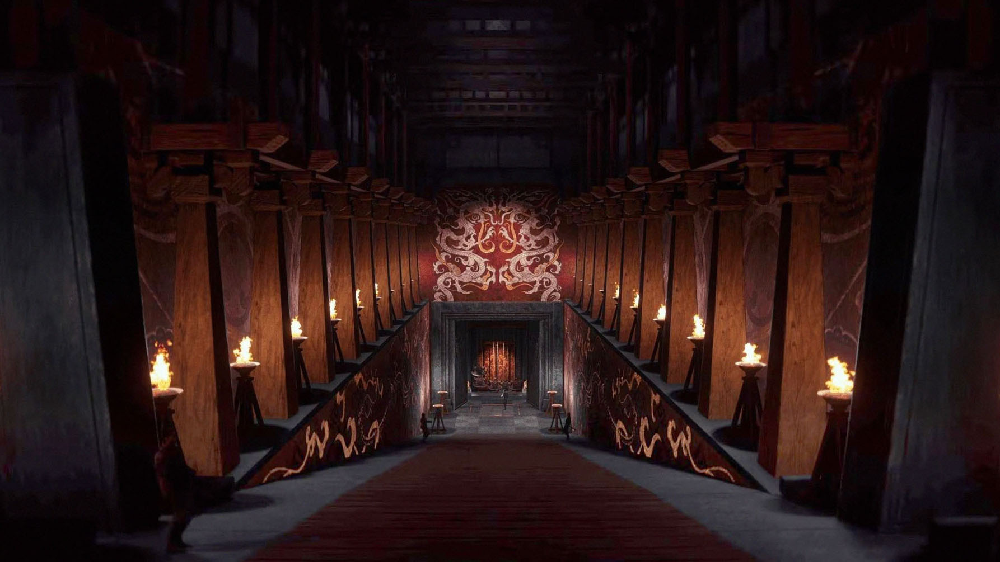
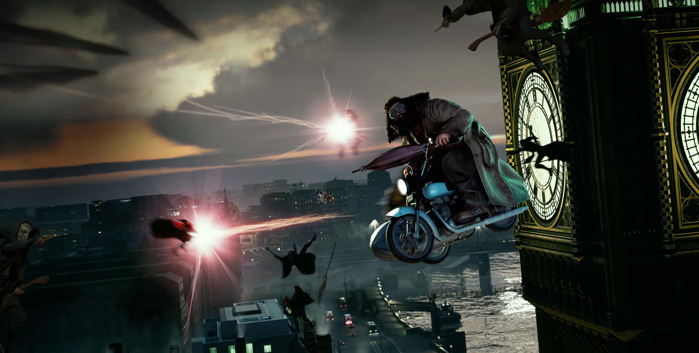
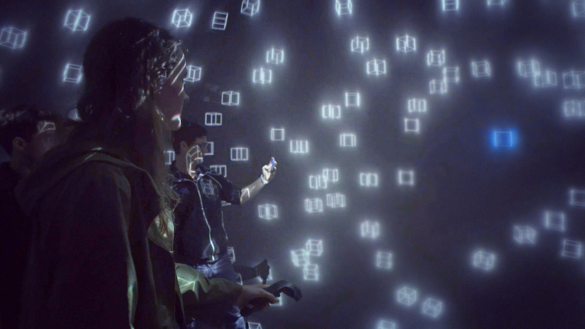
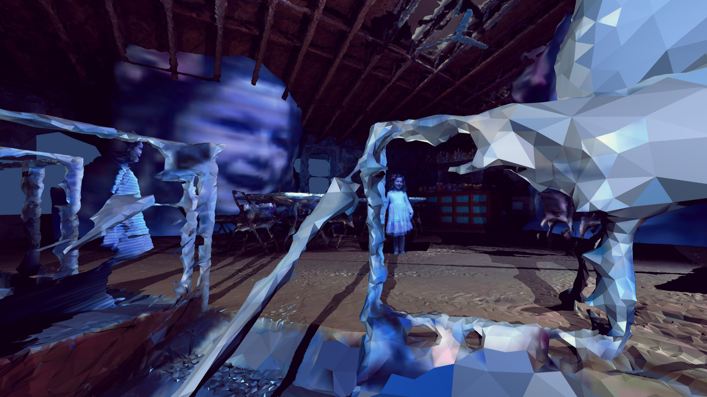
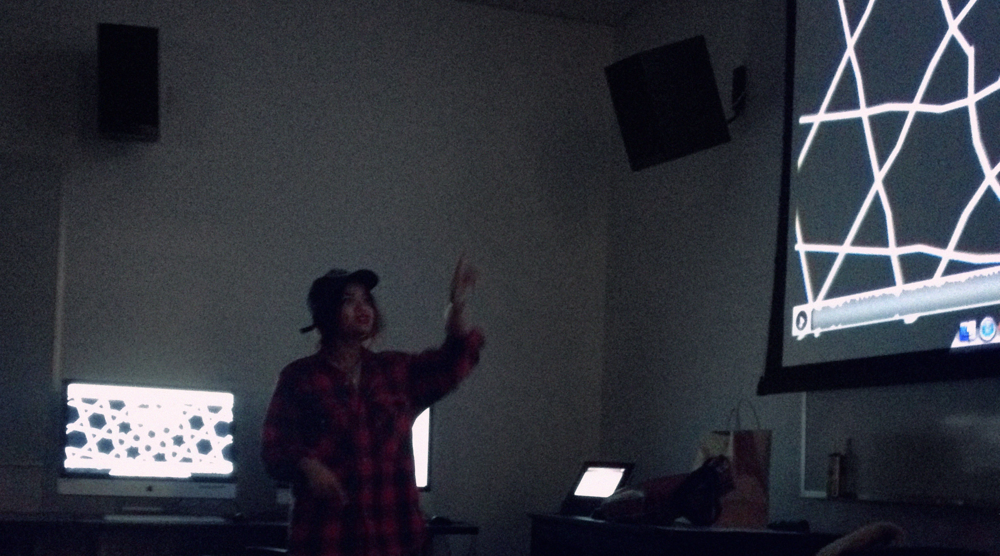
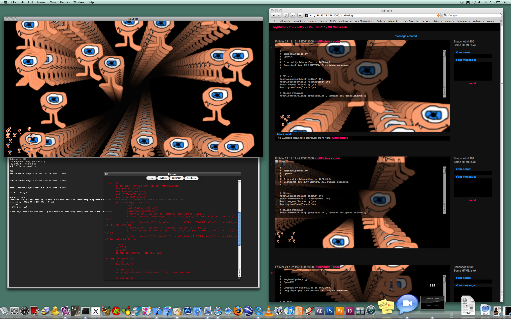
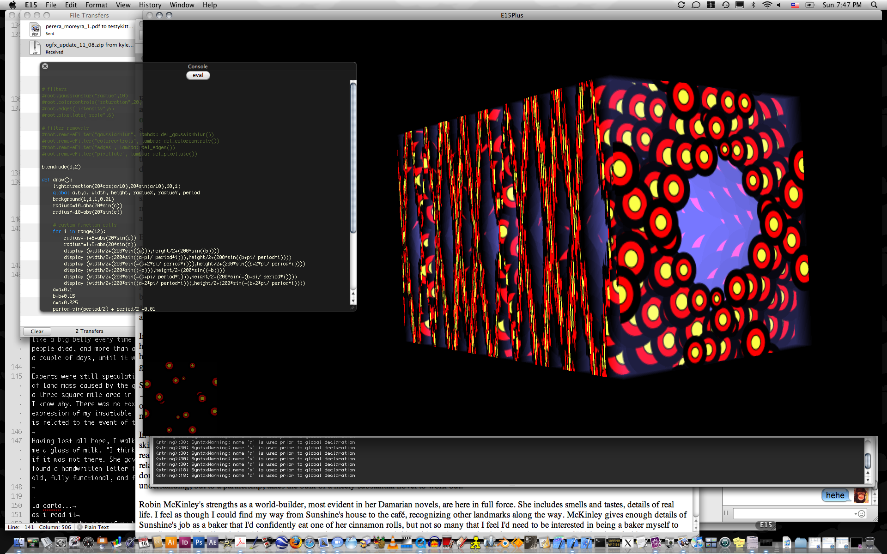
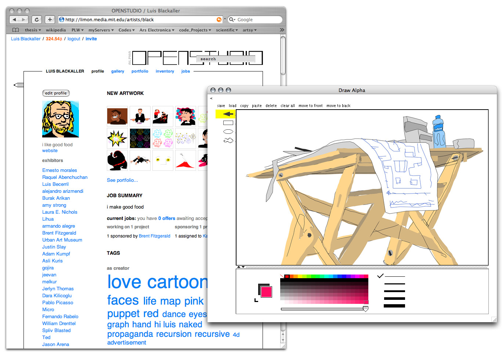
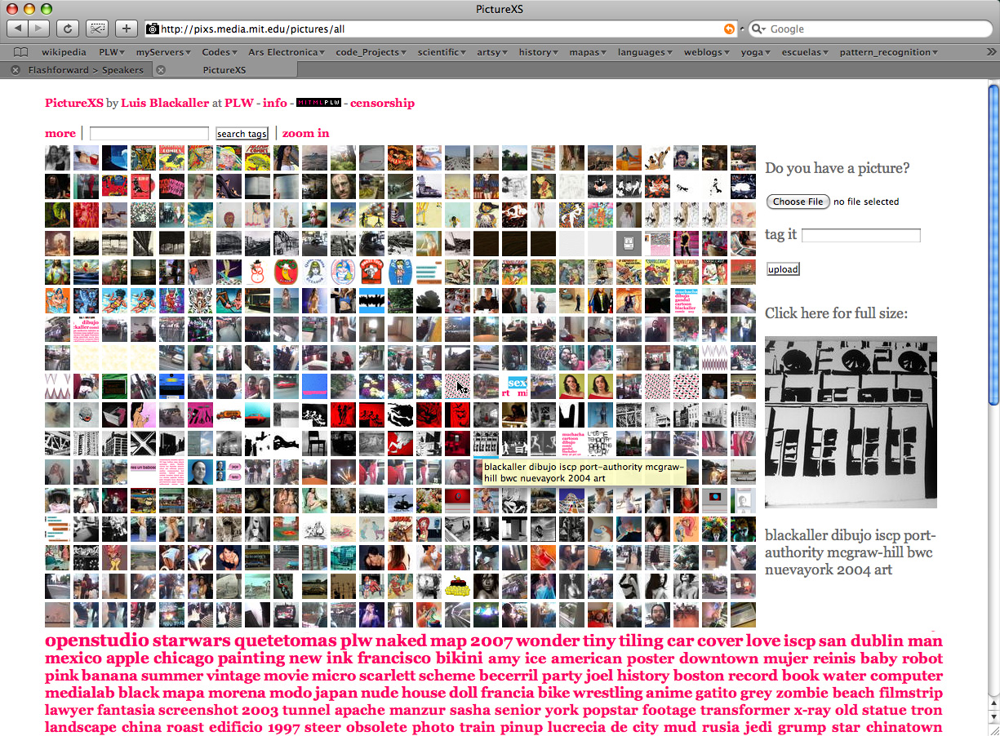

Luis E. Blackaller
👁 ✍️ 🎨 🎬 📚 ✂️ 🖥 🤖
I engage with the digital medium to explore creativity, artistic expression, collaboration, and communication. I am interested in visual systems, storytelling, animation, interactive art, postmodern fiction and transmedia, the influence of technique and production systems in the construction of meaning, public space, the history and anthropology of narrative media, issues of representation and diversity in popular culture, and the history and conservation of ephemeral media.
I work across disciplines to navigate the connective tissue between reproduction technologies and the human desire for symbolism and fiction, as well as the [liminal] tension between agency and control, experience, and story.
The work listed in this document is a testament to my creative and technical range and flexibility as an artist, designer, programmer, and communicator. I hope you enjoy them as much as I do.
👁 Recent Work
Terracotta Warriors VR
2024-2025
Conceived and designed in close collaboration with historians, archeologists and artists from Emperor Qin Shi Huang’s Mausoleum Site Museum in Xi'an, China, this 40 minute long multiplayer location based immersive journey offers visitors a unique opportunity to explore a virtual reality speculative reconstruction of Emperor Qin SHi Huang's Mausoleum, and transports them 2,200 years back in time to witness the eve of China’s first emperor’s burial. Guided by a local archaeologist, visitors traverse the vast underground complex to encounter ancient traps, ceremonial spaces, and relics from a vanished world.
Additional information:

Harry Potter VR
2019-2022
Wizards take Flight and Chaos at Hogwarts are two multiplayer Location Based virtual reality Narrative Experiences that take audiences inside the Wizarding World of Harry Potter to experience the magic in person ad Hogwarts freshmen students, brooms and magic wands included.
Animation was produced using game engine virtual production techniques to combine key-framed creature animations and motion captured live performances. The end product is fully interactive, and we placed special care to deliver an engaging experience for each one of the six players participating in it. For this reason, I devised a branching narrative structure that blended between different animations based on what the players were doing. This is similar to what is usually done in narrative computer gameplay, but with more emphasis in the fidelity of the performances, since the characters were required to inhabit the same space where the players were in virtual reality. For example, eye contact became extremely important, and we had to make sure each one of our characters addressed every player directly at some point in the adventure, looking at them in the eye every time this happened.
Additional information:

Holodome Labs
2018-2019
During my tenure as a creative director at Wevr, I was commissioned to design and run a year long workshop program in Los Angeles for Paul Allen’s Holodome, a prototype spherical interactive projection mapping system. I was responsible for teaching new media artists and filmmakers from multiple backgrounds about the expressive strengths and limitations of the system, and I worked with them to explore ideas, solve diverse technical challenges, and adjust their voices to this new format, while helping engineers and technicians troubleshoot and develop new features in the process.
Additional information:

✍️ Published Writing
Escritura Descompuesta
2021, in Spanish. Featured essay in experimental e-book Estamos Aquí, centered around the prospects, limitations, and dangers of automatic writing and its potential impact in the literary world. Published by Centro de Cultura Digital in Mexico City.
- Download ebook: Estamos Aquí
Espacio Público y Participación Narrativa en la Era Digital
2014, in Spanish. Featured essay in the book Artes Mediales, Convergencias y Tecnologías, centered around digitally mediated experiments and participatory programs in the public space. Published by Cinemateca Distrital in Bogotá, Colombia.
- Download PDF: Artes Mediales, Convergencias y Tecnologías
📚 Teaching
DESMA-172 Immersive Media Storytelling
UCLA Design and Media Arts 2023
Writing, directing and acting, pre production, production design, animation, performance capture, 3D-art, virtual production and interactive game engine development, haptics, theme park special effects and other aspects of production will be explored in the context of today’s immersive media landscape.
Students will be able to conceive a narrative immersive project and push their vision through the development and production process in a practical, results-oriented manner. This class will strengthen the students’ design and production experience and interactive storytelling skills as immersive creators, performers and/or developers.
In a workshop-based series of lectures, students will be guided through the theory and history of Immersive Storytelling by researching and deconstructing relevant case-studies and using them as the starting point to practice and accomplish different narrative and expressive goals. Basic prompt-based exercises will compel them to explore interactive game engine technologies, VR, projection mapping, interactive animation, real-time motion capture and other relevant aspects necessary to develop a powerful narrative experience.

IML-400 Creative Coding for the Web
USC Media Arts and Practices 2012-2015
A primer in HTML, CSS, and Javascript, IML-400 explores creativity in the world wide web from the standpoint of new media literacies. Following concepts I learned about education at MIT, I have injected a strong infusion of maker culture into the class recipe, my most important goal to help students from any background and level of expertise to engage with the medium creatively, and to understand the fundamentals of how the web works and how websites are made. I follow the cognitive patterns that led me to develop my own programming literacy —to understand code, and to express myself with it— to share the valuable bits that pushed me through the breakthroughs that helped me learn and develop a functional coding practice.
Class website archive:
- IML-400 Spring 2015 (archive)
- Class examples (all code included)
- Lecture notes example (basic)
- Object based pop ups (intermediate)
- Live inputs (intermediate)
- Fading slideshow (intermediate)
- Canvas clock (advanced)
- 3D particle raster tool (advanced)

🤖 MIT Media Lab
Performing Process
MIT Media Lab Thesis 2008
Abstract. Digital media has pushed art and culture towards formats defined by immediacy, interactivity, participation, and social systems. This thesis looks at recent changes in artistic practice within the realm of the digital visual arts. In order to study the intersection between interactive art and the digital image, I describe the design of an online participatory studio system, where an artist can perform their creative process and receive remote feedback from audience participants at the same time. Such a system opens a conversation between artist and audience that will shed new light on how we learn, understand and communicate boundaries in digital space and digital interactive art.
The main subject of my master thesis at the MIT Media Lab is a real-time interactive graphics environment called myStudio. It implements a custom studio web application to log and share my creative process by giving me the ability to publish code and picture snapshots directly to the web while writing and running scripts on a customized graphics engine. People who visited the studio website could send messages to my livecoding environment, and I could respond to them in real-time from within my livecoding session. By performing this experiment, I was able to observe changes in my creative process in a digitally mediated quasi public space, and to explore a versioning system for graphically oriented programs that correlated visualized snapshots with the corresponding versioned code.
Additional material:- Download thesis PDF: Performing Process
- Physical Language Workshop at the MIT Media Lab (archive)

E15
2007
E15 is an experimental networked architecture and graphics engine developed by the Physical Language Workshop at MIT to explore and organize web content in three dimensional interactive environments.
Additional material:
- e15.media.mit.edu at the wayback machine (archive)

oGFx
2007
oGFx is a tool to generate and explore 3D forms originating from procedurally generated 2D animations. oGFx is an element of E15, a blanket descriptor for much of the work that took place in the Physical Language Workshop between the years of 2007 and 2008 at the MIT Media Lab. oGFx is, in fact, the first of such projects falling under the E15 designation, and was developed by Kyle Buza and Luis Blackaller in the Summer of 2007.
In contrast to the traditional compile, run, debug, repeat style of the majority of today's programming environments, oGFx features an embedded Python interpreter to provide a malleable interface for livecoding. Artists and developers can update, modify, and interrogate the runtime state of an oGFx program at any point during its execution.
oGFx features solid support for user-defined GLSL-based shaders, as well as a mechanism to modify shader parameters from within Python. We also take advantage of GPU-accelerated image manipulation through the use of Apple's CoreImage framework.
Additional material:
- oGFx.mitplw.com (archive)

OpenStudio
2005-2008
OpenStudio was an experiment in creativity, collaboration & virtual economics developed by the Physical Language Workshop at the MIT Media Lab. Participants were able to create and trade or sell artwork in an online marketplace using a virtual currency.
The platform featured asynchronous browser based cloud hosted vector art tools with embedded drawing histories, on-demand rendering tailored to viewing devices, smart contracts for commissioned artwork, user driven taxonomies, and a distributed sensor-actuator system for building interconnected electronic artworks. It pioneered much of the creative activity we experience online today, from creator driven social media to surveillance and the data driven hyper commoditization of artistic expresion and appreciation.
Additional material:
- openStudio github repository (archive)
- openStudio flickr group (archive)

Tiny Icon Factory
2006-2012
The Tiny Icon Factory was an online gallery and drawing tool for the creation of black and white low resolution icons. The low resolution (13 by 13 pixels) was justified by the desire to lower the barrier of entry to creation and publishing as much as possible. All a user needed to do was to visit the website, wiggle their mouse across the tiny canvas, give their creation a name if they felt like it, and hit the publish button. A multitude of interesting behaviours emerged from this design pattern, including typographic experiments, and animations and short form poetry by taking advantage of the clever display of consecutive icons in cronological sequence.
With over 200,000 uncensored anonymous contributions in under two years, it has become a unique exploration of unhinged creative expression. Built in the Physical Language Workshop at the MIT Media Lab. During its heyday, it enjoyed features in Lifehacker, Digg, Del.icio.us, Flabber.nl, StumbleUpon, and several other design blogs and news sites. Also included in the Delight by Design show at the MIT Museum.
The functionality rich drawing application featured an invert function, several previews in different scales, and an optional grid, all meant to enhance the user's understanding of this meaningful art form. The custom data format encodes each icon in a 169 character string of 0s and 1s. The string is longer than my attention span in a very good day, and it will not fit my layout (or your browser) unless I shrink it or break it. After breaking it 13 times, the source of a typical Tiny drawing looks like this (If you stare at it long enough and you squint, you can almost see the drawing):
0 0 0 0 0 0 0 0 0 0 0 0 0 0 0 0 0 0 0 0 1 1 1 1 1 0 0 0 0 0 0 1 1 0 0 0 0 0 1 0 1 0 0 1 1 1 1 1 1 1 0 0 0 1 0 0 1 1 0 0 0 0 1 1 0 0 1 1 0 1 1 0 0 0 0 0 1 0 0 0 1 0 1 0 0 0 0 0 0 0 1 0 0 1 0 1 0 0 0 0 0 0 0 1 0 0 0 1 1 0 0 1 0 0 1 0 1 0 0 0 0 1 0 0 0 0 0 0 0 1 0 0 0 0 1 1 0 0 0 0 0 1 0 0 0 0 0 0 1 1 1 1 1 1 0 0 0 0 0 0 0 0 0 0 0 0 0 0 0
Additional material:
- Tiny Icon Factory flickr gallery (archive)
PictureXS
2007-2011
PictureXS was an anonymous image aggregator where anybody was able to upload and classify pictures without compromising their identity. It featured an embedded tracing tool, a self-regulated censorship system, and a taxonomy that combined comparative insights from tags and computer vision based analysis. Before it was turned off in 2011, PictureXS had collected over 30,000 pictures, 1000 drawings and 500,000 tags.

Miscelaneous
Warning: Some sections of these websites might require an update
- Reflections on Symmetry (tiling generator archive)
- PlugSense (archive)
- Generative art archive (requires Java)
- Browser based generative art gallery (work in progress)
- Fantastic Soup film collective (archive)
Thank you 😊